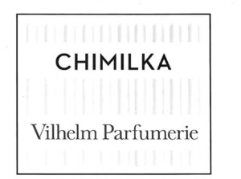

Trade Mark Journal No.2025/037 12 September 2025
WO0000001871814 (3)
Office of origin: Georgia
Date of International Registration:9 April 2025
Date of designation in the UK:
9 April 2025

The trademark is figurative and contains following verbal elements "CHIMILKA Vilhelm Parfumerie" carried out in latin stylized font in two lines placed into the black frame with vertical lines.
International priority date claimed: 14 November 2024
(Georgia)
- Class 3
- Amber [perfume]; aromatics [essential oils]; air fragrancing preparations; flavourings for beverages [essential oils]; breath freshening sprays; balms, other than for medical purposes; lip glosses; sachets for perfuming linen; scented water; Javelle water; lavender water; toilet water; moustache wax; massage gels, other than for medical purposes; make-up; deodorants for pets; deodorants for human beings or for animals; air fragrance reed diffusers; scented wood; perfumes; perfumery; decorative transfers for cosmetic purposes; ionone [perfumery]; eyebrow pencils; cosmetic pencils; hair conditioners; beard dyes; cosmetic dyes; cosmetic creams; skin whitening creams; incense; hair spray; nail varnish; hair lotions; lotions for cosmetic purposes; after-shave lotions; beauty masks; oils for perfumes and scents; oils for cosmetic purposes; oils for toilet purposes; essential oils; essential oils of cedarwood; essential oils of lemon; essential oils of citron; oils for cleaning purposes; bergamot oil; gaultheria oil; jasmine oil; lavender oil; almond oil for cosmetic purposes; rose oil; almond milk for cosmetic purposes; cleansing milk for toilet purposes; musk [perfumery]; deodorant soap; shaving soap; soap for brightening textile; cakes of toilet soap; antiperspirant soap; soap for foot perspiration; soap; almond soap; mint for perfumery; make-up kits; eau de Cologne; extracts of flowers [perfumes]; joss sticks; dentifrices; lipstick cases; hydrogen peroxide for cosmetic purposes; breath freshening strips; teeth whitening strips; lipsticks; pomades for cosmetic purposes; shaving preparations; cosmetic preparations for baths; bath preparations, not for medical purposes; hair straightening preparations; hair waving preparations; colour-removing preparations; leather bleaching preparations; mouthwashes, not for medical purposes; lacquer-removing preparations; make-up removing preparations; nail care preparations; collagen preparations for cosmetic purposes; aloe vera preparations for cosmetic purposes; sunscreen preparations; breath freshening preparations for personal hygiene; make-up powder; nail varnish removers; vaginal washes for personal sanitary or deodorant purposes; tissues impregnated with cosmetic lotions; tissues impregnated with make-up removing preparations; massage candles for cosmetic purposes; potpourris [fragrances]; bath salts, not for medical purposes; air fragrancing preparations; astringents for cosmetic purposes; eyebrow cosmetics; make-up preparations; sun-tanning preparations [cosmetics]; hair dyes; neutralizers for permanent waving; cosmetic preparations for eyelashes; cosmetic preparations for skin care; cosmetics; cosmetics for children; cosmetics for animals; mascara; cleansers for intimate personal hygiene purposes, non-medicated; deodorising cleansers for personal hygiene; cleaning products with disinfectant properties; bleaching preparations [decolorants] for cosmetic purposes; antiperspirants [toiletries]; toiletry preparations; phytocosmetic preparations; talcum powder, for toilet use; terpenes [essential oils]; henna [cosmetic dye]; shampoos for animals [non-medicated grooming preparations]; shampoos for pets; dry shampoos; shampoos; herbal extracts for cosmetic purposes; extracts of flowers [perfumes]; ethereal essences; badian essence; mint essence [essential oil].
C.P.C. Creative Perfume Company Holding SA
Representative: Nino Bakhtadze, Shartava str. 18, Apt. 15, 0160 Tbilisi, GEORGIA